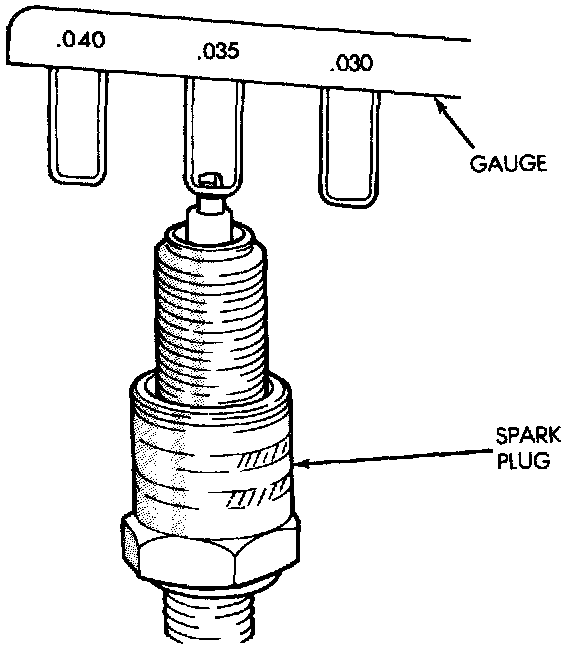

Spark Plug: Adjustments
PLUG GAP ADJUSTMENTFig. 26 Gapping Spark Plugs - Typical:

Check the spark plug gap with a gap gauge tool. If the gap is not correct, adjust it by bending the ground electrode (Fig. 26). Never attempt to adjust the gap by bending the center electrode.
Spark Plug Gap - 0.89 mm (.035 in).